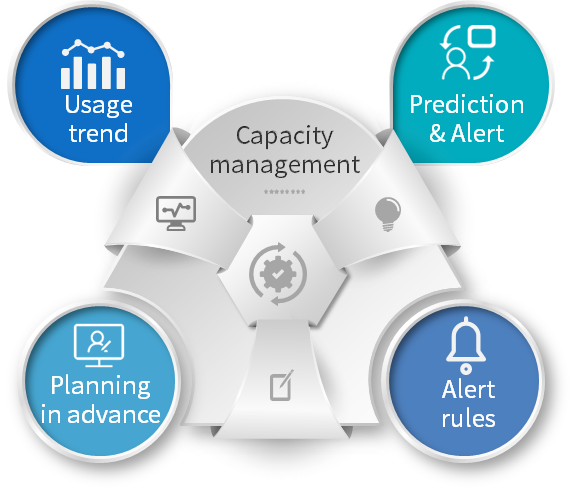

Capacity Management
Capacity management provides alert functions for resource bundle quotas, IP pools, and IP address usage for roles such as tenants, infrastructure, and business group administrators. SmartCMP supports the detection and tracking of the capacity usage of the infrastructure, providing a basis for making informed decisions. Display the overall status of the data center through a graphical interface; track, analyze, and alert the capacity usage of various cloud resources; track the use of infrastructure resources such as resource bundles and IP pools, and perform alerts according to the established policies.

1. Resource Alert
The resource alert monitors the usage of resource quotas. When the preset conditions are met, an alert is triggered. Click the secondary menu "Resource Alert" under "Capacity Management" on the left navigation to display the resource alert list. The list includes the alert level, alert name, alert category, alert type, range, object, status, creation time, and creator. Resource alerts can be added, edited, enabled, disabled, deleted, filtered, searched, and more.
1.1. Adding Resource Alerts
Select Resource Alert and click the Add button to enter the Add Resource Alert page.
On the Add Resource Alert page, define the basic information of the alert. Enter the name of the alert in turn, select the alert category, and the type of alert. Supports threshold alerts and predicted alerts for IP pools and resource bundles.
Define alert trigger conditions and objects according to different alert categories and types selected.
Click “Save” to return to the resource alert list interface.
1.2. Edit Alerts
Click "Resource Alert" to select an alert that has been added. The "Edit" button on the toolbar becomes available. Click the "Edit" button, or directly click the alert name to enter the alert editing interface.
1.3. nable/Disable Alerts
Click "Resource Alert" to select an alert with the status enabled/disabled. The toolbar "Disable" / "Enable" button becomes available. Click to indicate that the alert status is updated successfully.
1.4. Delete Alerts
Click "Resource Alert" to select an alert that has been added. The toolbar "Delete" button becomes available. Click the "Delete" button to confirm the deletion prompt, and the alert is deleted successfully.
2. Triggered alert
Click on the left navigation "Capacity Management" - "Triggered Alerts" to display a list of triggered alerts, including alert level, alert name, triggering alert object, alert type, first trigger time, last trigger time, and alert status. The alert status is divided into triggered, paused, and released. It is also possible to resume, pause, and cancel the triggered alerts in the list.。
Select “triggered alert” and select a triggered alert. The “pause” and “release” in the toolbar will become available. Click “Pause”, there will be a prompt, after confirmation, the operation is successful.
Click on the alert name in the list to view the details of the alert as well as historical data. This page shows the object triggering the alert, the level of the alert, the triggered condition, the business group, the type, the overall resource bundle quota (vCPU, memory, storage, virtual machine number) or IP pool usage, alert chart (adjustable time range to flexibly view the alert data for each time period) and the subsequent operation history of the alert.
The object triggering the alert can be linked: the resource bundle is linked to "resource bundle management" - "resource usage trend", IP pool link to "IP address management" - "IP address usage trend".